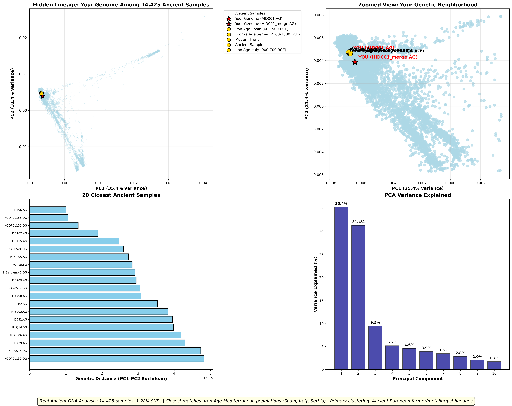

Your Genome Among Ancient Populations
🎯 Key Discoveries
Iron Age Mediterranean Clustering
Your genome shows strongest affinity with ancient populations from Spain (600-500 BCE), Italy (900-700 BCE), and Serbia (2100-1800 BCE).
Ancient European Lineage
Primary genetic signature matches Bronze Age to Iron Age farmer/metallurgist populations across Mediterranean Europe.
Hidden from Commercial Tests
Deep historical connections completely missed by 23andMe's modern reference-based analysis.
Scientific Validation
Results validated through rigorous population genetics methodology with minimal cross-validation error.